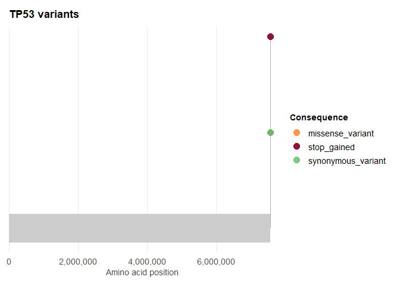
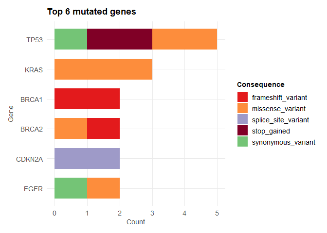
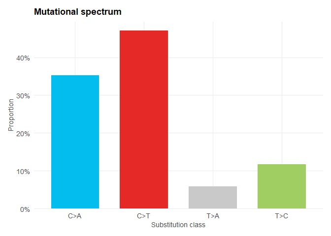
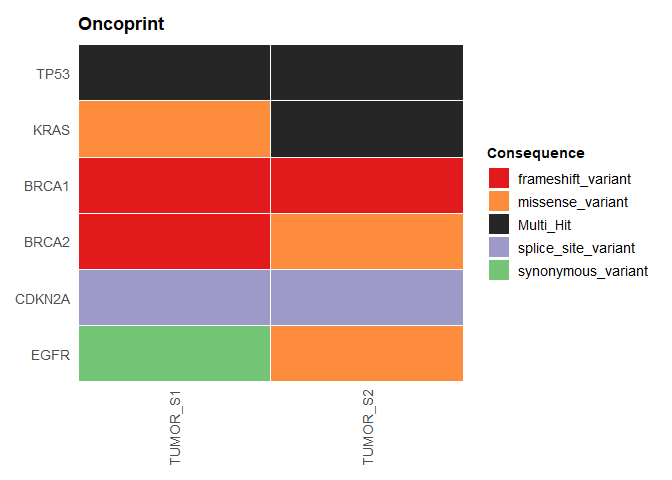
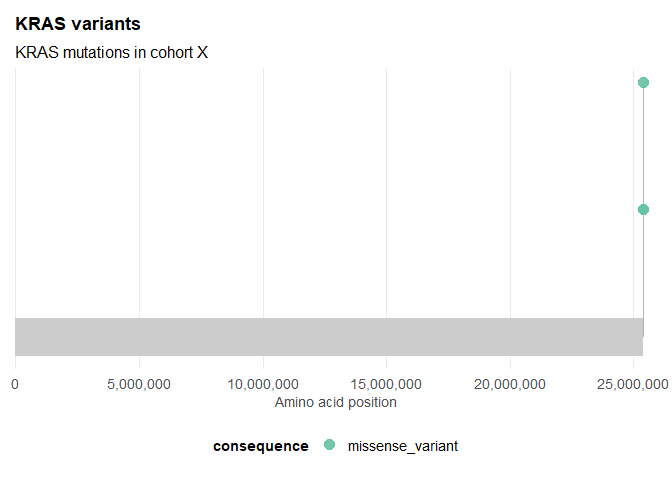

ggvariant reads variant data from a VCF file or a plain data frame and produces ggplot2 plots for common tasks in variant review: lollipop plots of variant position along a gene, consequence summaries by sample or gene, mutational spectrum charts, and cohort-level comparisons such as oncoprints and per-sample mutation burden. Every function accepts either input format and returns a standard ggplot object, so the result composes with any ggplot2 layer, scale, or theme you already use. Designed for both wet-lab biologists and experienced bioinformaticians.
Installation
Install the released version from CRAN:
install.packages("ggvariant")Install the development version from GitHub:
# install.packages("remotes")
remotes::install_github("josh45-source/ggvariant")Example
Read a VCF file and plot variant positions along a gene:
library(ggvariant)
vcf_file <- system.file("extdata", "example.vcf", package = "ggvariant")
variants <- read_vcf(vcf_file)
plot_lollipop(variants, gene = "TP53")
If your data is already in a data frame — a spreadsheet export, say, rather than a VCF file — coerce_variants() maps your column names onto the same tidy format instead.
Overview
-
Reading and coercing variants —
read_vcf()parses VCF v4.x files, including gzipped and multi-sample files, and extracts SnpEff (ANN) or VEP (CSQ) annotations automatically.coerce_variants()remaps an existing data frame’s columns onto the same format. -
Plots —
plot_lollipop(),plot_consequence_summary(),plot_variant_spectrum(),plot_oncoprint()(alsoplot_waterfall(), an alias for the same function), andplot_tmb(). -
Palettes and themes —
gv_palette()andtheme_ggvariant()expose the built-in colours and plot theme for reuse in plots you build yourself.
A few of the other plot types, on the same example data:
plot_consequence_summary(variants, group_by = "gene", top_n = 6)
plot_variant_spectrum(variants)
plot_oncoprint(variants, top_n = 6)
See vignette("ggvariant") for a full walkthrough — domain annotations, colouring by sample, proportional and faceted views, interactive plotly output — or the function reference for argument details.
Customisation
Every function returns a standard ggplot object, so any ggplot2 layer, scale, or theme composes onto it directly:
library(ggplot2)
plot_lollipop(variants, gene = "KRAS") +
scale_colour_brewer(palette = "Set2") +
theme(legend.position = "bottom") +
labs(subtitle = "KRAS mutations in cohort X")
Package structure
ggvariant/
├── R/
│ ├── ggvariant-package.R # Package documentation
│ ├── read_vcf.R # read_vcf() and coerce_variants()
│ ├── plot_lollipop.R # plot_lollipop()
│ ├── plot_functions.R # plot_consequence_summary(), plot_variant_spectrum()
│ └── utils.R # Theme, palettes, shared helpers
├── tests/
│ └── testthat/
│ └── test-core.R # Unit tests
├── inst/
│ └── extdata/
│ └── example.vcf # Bundled example VCF
├── DESCRIPTION
└── NAMESPACEContributing
Pull requests are welcome. Please open an issue first to discuss proposed changes. All contributions should include tests.
Acknowledgements
The waterfall/oncoprint visualisation in v0.2.0 was suggested by Dr Nour-al-dain Marzouka.
Citation
If you use ggvariant in your research, please cite:
Ayo, J. J. (2026). ggvariant: Tidy, ggplot2-native visualization for genomic variants (R package version 0.1.0). CRAN. https://doi.org/10.32614/CRAN.package.ggvariant